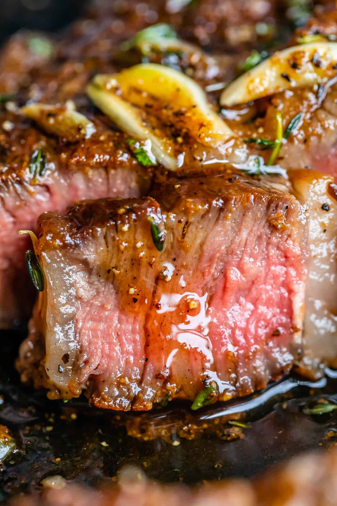

The Perfect Ribeye Steak

Ingredients:
- 1 Ribeye Steak (USDA Prime)
- Salt
- Olive or Avocado Oil
- Butter
- 3 Cloves of Garlic
- Aromatics (Sprigs of Rosemary, Thyme, etc.)
Instructions:
- Drizzle about 2 tbsp of your oil into a cast-iron (non-stick will do if that's all
you have) pan.
- Heat the pan on medium heat until very hot.
- While the pan is heating, sprinkle a nice layer of salt on both sides of the raw
steak.
- Once the pan is hot, place your steak flat onto the pan and make sure you hear
a sizzle.
- Without moving the steak around, let it sear on one side for about 3 minutes.
- Flip the steak and toss in your clumps of butter, garlic cloves (crushed), and
your aromatics of choice.
- Begin to baste the steak with the puddle of melted butter and other ingredients
you just added (for about 20 seconds or so).
- Now, let that side of the steak finish searing for about 2 minutes.
- Remove the garlic and aromatics from the pan. Move the steak onto a plate and let
it rest for about 5 minutes.
- Drizzle the leftover butter-juice mixture from the pan onto the steak,
slice, and enjoy!